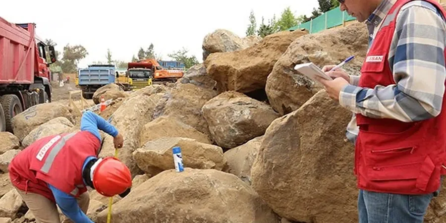

Notre bureau d'ingénierie géotechnique à Antibes propose une gamme complète de services adaptés aux spécificités de la Côte d'Azur. De la caractérisation des sols à la conception de fondations, en passant par les études de stabilité et la surveillance d'excavations, nous accompagnons les projets de construction et d'aménagement urbain. Notre expertise locale garantit des solutions conformes aux normes françaises, que ce soit pour des bâtiments neufs, des infrastructures ou des analyses de stabilité de pentes en terrain accidenté. Nous réalisons des investigations de subsurface rigoureuses et des rapports d'étude géotechnique complets, en phase avec les exigences réglementaires.

Démarche et périmètre
Considérations locales
Notre équipe possède une expertise régionale consolidée sur la Côte d'Azur, avec une connaissance fine des formations géologiques locales et des contraintes réglementaires. Nous utilisons un matériel de laboratoire calibré pour les essais de sols méditerranéens (calcaires, marnes, sols résiduels) et collaborons étroitement avec les bureaux de contrôle et les collectivités locales (mairie d'Antibes, DDTM). Nos rapports sont toujours code-compliant et intègrent les spécificités du microzonage sismique local. Nous sommes également compétents pour la gestion des sols organiques rencontrés dans les zones humides du littoral.
Ressource vidéo
Normes techniques en vigueur
En France, nos études suivent les normes de la série NF P 94 (essais de sol) et NF EN 1997 (Eurocode 7) pour le calcul géotechnique. Nous appliquons les règles du DTU 13.12 pour les fondations superficielles et le NF P 94-261 pour les fondations profondes. Pour la sismicité, nous utilisons l'EC8 (NF EN 1998) et le guide AFPS 90. Nos sondages sont réalisés selon la norme NF P 94-117 (SPT) et NF P 94-120 (carottage). Chaque rapport est conforme aux exigences de la norme NF P 94-500 sur les missions géotechniques.
Autres services liés
Doutes fréquents
Quels sont les sols typiques rencontrés lors de constructions à Antibes ?
À Antibes, on trouve principalement des calcaires fracturés et des marnes dans les hauteurs, ainsi que des alluvions (sables, graviers) dans les vallées. Les pentes peuvent présenter des colluvions argileuses instables. Une reconnaissance par sondages carottés et essais pressiométriques est recommandée pour caractériser ces terrains.
Y a-t-il des risques sismiques à prendre en compte pour un projet à Antibes ?
Oui, Antibes est en zone de sismicité modérée (zone 3 selon le zonage français). Pour les bâtiments neufs, l'Eurocode 8 (NF EN 1998) s'applique. Des études de microzonage sismique peuvent être nécessaires pour les ouvrages sensibles, en analysant l'amplification locale des ondes due aux formations géologiques.
Quelles normes régissent les études de sol en France ?
Les études de sol suivent la norme NF P 94-500 qui définit les missions géotechniques (G1, G2, G3). Les calculs sont basés sur l'Eurocode 7 (NF EN 1997) et les DTU. Les essais in situ (SPT, pressiomètre) sont réalisés selon les normes NF P 94-117 et NF P 94-110. Tous nos rapports sont conformes à ces textes.
Quels types de projets nécessitent une étude géotechnique à Antibes ?
Tout projet de construction (maison individuelle, immeuble, piscine, mur de soutènement) ou d'infrastructure (voirie, réseaux) doit faire l'objet d'une étude géotechnique préalable. Les pentes et les zones de remblai sont particulièrement sensibles. Nous intervenons également pour des diagnostics de sols pollués ou des études d'ancrage.
Emplacement et zone de service
Nous intervenons sur Antibes.